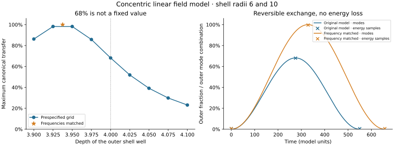

Analytical constructions, numerical cross-checks, and limits of an SU(3) interpretation
We investigate the conditions under which finite geometric oscillator models possess and retain a three-dimensional complex mode sector with continuous internal symmetry. The Laplacians of the tetrahedral and cubic graphs contain degenerate triplets. Their quadratic amplitude dynamics has a U(3) symmetry with an SU(3) subgroup. An ordinary local quartic nonlinearity, however, destroys this symmetry even within the triplet and generally couples in further modes. We give conditions for symmetry-compatible exchange between two triplets, construct a conservative total-density mediator, and examine geometric countermodels. None of the 54 individual distance kernels examined met the prescribed isotropy criterion. Identical matched connections and a symmetric sum over six spatial directions, in contrast, provide controlled isotropic constructions. The results concern specified reduced models; a derivation from spatial Q-ball fields, local gauge dynamics, and a QCD interpretation remain outstanding.
The starting question is whether four or eight coupled constituents can generate three equivalent internal states and suitable interactions. We distinguish the existence of a degenerate linear mode sector from its nonlinear preservation and from a local gauge theory. We study dimensionless complex graph amplitudes. The geometry is prescribed; the constituents do not move together on their own to form a bound body.
The mathematical tools—graph spectra, unitary invariance, projection, and completing the square—are established. No claim to novelty or priority is made. The contribution of this working draft is their concrete combination, the counterchecks, and the identification of the missing steps in the derivation.
| Quantity | Meaning | Not to be equated with |
|---|---|---|
| N = 4 or 8 | Number of graph sites | Colors or gluons |
| a ∈ ℂ³ | Three complex mode amplitudes | Already established quark states |
| l, m | Angular momentum or winding index in other project models | Dimension of this triplet |
| A = 1,…,8 | Generator index of SU(3) | Eight spatial vertices |
For z ∈ ℂᴺ, we choose canonical complex amplitudes and the graph Laplacian L:
This canonical structure is a model assumption. It is not derived here from a relativistic field theory. For the complete tetrahedral graph K₄ and the edge graph of the cube Q₃, the following hold exactly:
Let X be the matrix of vertex coordinates with entries ±1: for the tetrahedron, its rows are (1,1,1), (1,−1,−1), (−1,1,−1), (−1,−1,1); for the cube, they comprise all eight sign combinations. Then U = X/√N has orthonormal columns. For z = Ua, it follows that H₂ = λ a†a, with λ = 4 and 2, respectively. Every transformation a ↦ Wa with W ∈ U(3) preserves this functional.
Consequence. The degenerate complex quadratic sector has an additional continuous internal symmetry. The spatial symmetry group of the finite body remains discrete. More precisely, U(3) ≅ [SU(3) × U(1)]/ℤ₃. The common phase has therefore not been removed.
Increasing a single edge weight from 1 to 1.01 lifts the degeneracy: the tetrahedral triplet becomes {4,4,4.02}, and the lower cubic triplet becomes {2,2,2.0049688749}. Moreover, the uniform mode with eigenvalue zero lies below the triplet under consideration. A low-energy argument alone therefore does not justify treating the triplet in isolation.
With S = a†a, projecting a local quartic energy gives exactly
The identity follows by expanding the expression and using the second and fourth sign moments of the vertex coordinates. At S = 1, it equals 1/N for both a = (1,0,0) and (1,i,0)/√2, but 7/(3N) for (1,1,1)/√3. States of equal norm thus have different energies: the linear U(3) symmetry does not survive this local nonlinearity.
In addition, |Ua|²Ua generally has a component outside the triplet. Its amplitude projected onto the normalized external mode is
For the tetrahedron, this is the uniform mode; for the cube, it is the xyz-parity mode. Particularly symmetric initial states with one or two components can conceal this effect.
Numerically, the full equation i ż = Lz + 0.5|z|²z was integrated up to T = 20 without projecting back. The initial vector within the triplet was proportional to (1, 0.7 + 0.3i, −0.2 + 0.6i). DOP853 with tolerances of 10⁻⁹ and 10⁻¹¹, a maximum step of 0.1, and 401 output points gave the following maximum relative leakage over the 401 output points at the finer accuracy level:
| Initial amplitude | Tetrahedron | Cube |
|---|---|---|
| 0.1 | 3.861 × 10⁻⁸ | 9.512 × 10⁻⁹ |
| 0.3 | 3.918 × 10⁻⁶ | 8.502 × 10⁻⁷ |
| 1 | 8.910 × 10⁻⁴ | 2.021 × 10⁻⁴ |
The leakage is ‖(I − UU†)z‖²/‖z(0)‖². The norm and energy criteria of 10⁻⁷ and the final-state comparison criterion of 10⁻⁶ were met. Small leakage does not guarantee symmetry: equation (3) already breaks the symmetry within the sector.
Let two graphs be coupled by nonnegative weights Wᵢⱼ:
The second line of (5) holds for z = Ua and z′ = Vb. DA and DB contain the row and column sums of W, respectively. In a common internal basis, this expression is invariant under every common SU(3) transformation if and only if A = αI, B = βI, and C = cI. This follows from the commutant of the irreducible fundamental representation. A relative unitary choice of basis can make C a scalar only if its three singular values are equal; it does not repair anisotropic self-blocks.
Furthermore, the sector must be preserved by the full dynamics. With PU = UU† and PV = VV†, the following are additionally required:
Matched connections. With identical bases and W = JI, one obtains exactly Hex = J‖a−b‖² without leakage. This contact law is explicitly imposed, rather than derived from free field superposition. By contrast, W = w11ᵀ gives C = 0 for the nonuniform triplets: a uniform connection between all sites shifts frequencies but produces no triplet exchange.
As a countermodel, we chose Wᵢⱼ = exp[−|rᵢ−r′ⱼ|²/(2ℓ²)]. A vertex radius of 1, separation d ∈ {3,4,6}, range ℓ ∈ {1,2,4}, and three orientations (identity, Rz(π/4), Ry(π/2)) yield 54 cases across the two geometries. No case met the relative isotropy criterion of 10⁻¹⁰ with ‖C‖ > 10⁻⁸. The smallest cross-block anisotropy value was 0.29739. This is the result of a finite search, not an exclusion of all distance laws.
The sum of identical kernels for the six displacements ±4eₓ, ±4eᵧ, ±4ez at ℓ = 2, in contrast, gave C = −0.05845231382 I (tetrahedron) and −0.05960274201 I (cube), isotropic self-blocks, and leakage residuals below 1.1 × 10⁻¹⁵. Negative cross-blocks do not contradict the positivity of the original spring energy.
Limit of applicability: The test concerned an aggregated coupling kernel. Six independently moving neighbors form a larger dynamical system. Their coherent combination must be examined there with its own normalization (for six equal amplitudes: a factor of √6) and all orthogonal neighbor modes. The static sum does not prove its dynamical preservation.
An explicitly U(3)-compatible nonlinearity depends only on the total density S. For two triplets, each with one real mediator, we define
Completing the square gives, for each constituent,
For positive ω, J, K and λ > h²/K, the energy is bounded below. With ω = K = 1, λ = 0.3, and h = 0.4, the residual quartic coefficient is 0.14. Static minimization of the mediator is exact; using it as a dynamical elimination would additionally require a separation of timescales.
Direct differentiation shows that M = aa† + bb† is conserved. Hence the total norm tr M and the eight quantities QA = tr[(λA/2)M] are conserved. Here λA denotes the Gell-Mann matrices, not the quartic coefficient. These are Noether quantities of the model, not already identified electric or QCD color charges.
For an isolated triplet, the mediator alone changes only its common phase velocity. Only J ≠ 0 enables population exchange between the constituents. For J ∈ {0;0.15} and h ∈ {0;0.4}, four runs were computed up to T = 80, each at two accuracy levels. Initial data before joint normalization: a = (1; 0; 0), b = (0; 0.7; 0.3i). Both vectors are divided by √1.58. In addition, y = (0; 0) and P = (0.1; −0.1).
| J | h | Range of |a₁|² up to T = 80 |
|---|---|---|
| 0 | 0 or 0.4 | Constant at 0.6329113924 |
| 0.15 | 0 | 0.0000006121 to 0.6329113924 |
| 0.15 | 0.4 | 0.0000365731 to 0.6329113924 |
In the final run, the maximum energy drift at the finer accuracy level was 1.17 × 10⁻¹², and the drift of the charge matrix was 6.12 × 10⁻¹³. The reported population ranges refer to 801 output points; continuous-time extrema were not certified. The tolerance comparisons passed. This closed dynamics includes neither radiation loss nor free spatial particle motion. Long-term spatial binding or a bound state in the continuum (BIC) does not follow from it.
Following the first draft, the missing linear network test was carried out. A central cluster and six independent neighboring clusters at ±4 along the coordinate axes each have their own internal graph Laplacian. Couplings exist only between the center and its neighbors. The resulting Hamiltonian matrices have dimensions 28 and 56 for the two geometries. Identical matched connections with J = 1 are compared with the distance kernel from Section 4.1.
Two subspaces must be distinguished: the 21 independent local triplet amplitudes and the six-dimensional space comprising the central triplet plus an equal neighbor amplitude. In the second space, the canonically normalized embedding is z₀ = Ua, zₛ = Ub/√6. With matched connections, this space is exactly invariant; its Hamiltonian is
For the distance kernel as well, the merely projected 6×6 matrix is isotropic (numerical residual below 1.3 × 10⁻¹⁵). Its block coupling to the outside, however, does not vanish. The Frobenius norm of this block is 0.88009 for the tetrahedron and 1.79607 for the cube. The full time evolution therefore leaves the projected space.
| Geometry / initial state | Outside local triplets | Outside the coherent combination |
|---|---|---|
| Tetrahedron / central | 1.382 % | 2.802 % |
| Cube / central | 4.676 % | 6.491 % |
| Tetrahedron / neighbor sum | 0.605 % | 99.749 % |
| Cube / neighbor sum | 23.242 % | 96.333 % |
The values are maximum norm fractions over 801 output points up to T = 80. The matched connection showed only residuals below 6.3 × 10⁻²⁹ for all initial states. The time evolution was evaluated by eigendecomposition of the full linear Hamiltonian; norm and energy drift remained below 3 × 10⁻¹⁴. The new run required 0.047 CPU-s on TS440.
The mechanism is already apparent analytically: the uniform mode of a single neighbor receives the amplitude u₀ᵀWₛᵀUa. These contributions can cancel in an aggregated sum, but in the full network they lie in different neighbor spaces. Their squared norms do not cancel. This refutes the transfer of static sum isotropy to the chosen dynamical reduction. It does not exclude other globally distributed degenerate eigenmodes of the entire network.
An additional construction yields equal channel couplings from a single scalar field rather than from three matched ports. We choose the linear real Klein–Gordon action with a prescribed radial potential:
This is a new linear test model with external shells, not a self-consistent Q-ball solution. With φ = Σᵢuᵢ(r,t)Yᵢ(Ω)/r and the real normalized dipole harmonics Yᵢ = √(3/(4π)) nᵢ, angular integration gives the same radial operator D₁ = −∂ᵣ² + 2/r² + 10 + V(r). The radial measure is dr, with ∫uₙuₖdr = δₙₖ for the eigenfunctions. Regularity at the origin and decay on the half-line are implemented numerically by a regular origin and a Dirichlet boundary at the edge of the box. The equal treatment of the angular components follows from spherical symmetry and orthogonality.
Two exact radial eigenfunctions with positive eigenvalues e₁,e₂ generate an invariant linear sector. Canonical oscillator amplitudes cₙ = (√ωₙ qₙ + i pₙ/√ωₙ)/√2 with ωₙ = √eₙ give H = Σωₙ|cₙ|² without a rotating-wave approximation. A common radial basis rotation O, determined by diagonalizing the radius operator projected onto this sector, gives
The exchange strength is thus obtained from the radial field calculation and is equal for all three angular components. General U(3) transformations of the canonical amplitudes are not simply spatial rotations; they can mix field coordinates and momenta.
| Shell separation d | |J| | Maximum canonical transfer | First maximum t |
|---|---|---|---|
| 2 | 0.0637380 | 99.909 % | 24.633 |
| 3 | 0.0172399 | 97.435 % | 89.938 |
| 4 | 0.00471585 | 68.151 % | 274.976 |
The values come from the grid R = 24, h = 0.025. Halving the grid spacing at R = 20 changed |J| by less than 3 × 10⁻⁴ in relative terms; enlarging the box from 20 to 24 changed it by less than 7 × 10⁻¹¹. The norm, eigen-residual, and analytical two-mode time-evolution checks, as well as the prespecified convergence criteria, passed. Nine radial cases and the angular checks required 0.0183 CPU-s on TS440.
Interpretation of the percentages: The quantity is |b|² for an initially normalized inner canonical combination. This is neither the fraction of spatial field energy in the outer shell nor a particle count. Physical field coordinates carry frequency-dependent factors of 1/√ωₙ. The transfer is determined analytically from the two-mode matrix; the numerical eigenvalues are not interval-certified.
Nonlinearity remains the limitation. For a complex spatial dipole amplitude η = a·Y, the identity ∫|η|⁴dΩ = 3[2(a†a)² + |a·a|²]/(20π) holds exactly. A linear and a circular normalized amplitude therefore differ by a factor of 1.5. This angular test refutes automatic U(3) invariance of a local complex quartic term. It is not an already derived nonlinear normal form of the real field in (11). An additional P₂ angular perturbation also splits the projected operator itself and couples in l = 3.
Kaminaga's concentric δ-shells provide a mathematically parallel finding concerning the m-independent partial-wave structure [3, Lemma 9 and Remark 4]. His asymptotic tunneling theorem, however, concerns matched limiting levels at l = 0 and large separation [3, Theorem 17]. It establishes neither our numerical values for smooth potentials at l = 1 nor exact complete transfer at finite separation; the latter follows here from our own two-mode algebra. Technical review notes on the printed proof in §§6–7 are documented in the source audit; its error orders are not adopted as a certificate. For the original Q-balls, the coupled l = 1 problem remains decisive. Panin and Smolyakov identify translations in a different two-field model [4, Eq. (22)]; their stability analysis does not prove the absence or presence of positive internal modes in our model.
Result and remaining gap: Equal linear exchange can be derived from a common spatial field geometry. The autonomous emergence of this geometry and the preservation of symmetry under the actual nonlinear field couplings remain open. In our multicomponent full formula, internal U(3) at N = 3 and g = 0 would already be assumed rather than explained by spatial geometry; the existing g term generally breaks it.
The maximum transfer at shell separation d = 4 is not a special universal number. For the canonical two-mode matrix in (12), with δ = εA − εB,
J controls the exchange, and δ the frequency detuning. At larger separations, J decreases, so a small remaining detuning limits transfer more strongly. The fraction that is not transferred is neither vanished energy nor a separate dark sector. Cosmological quantities do not occur in this model.
A new control varied only the depth A of the outer well while keeping the radii at 6 and 10. A prespecified grid A ∈ [3.9;4.1] and a root search for δ(A) restricted to this interval gave A = 3.9375147759 on the finest grid. Relative to A = 4, this is a reduction of approximately 1.56 %. The canonical transfer then analytically reaches its full value at δ = 0, provided J ≠ 0. Numerically, |δ| < 5 × 10⁻¹⁴. This is an expected control of frequency matching, not a new fundamental constant.
In addition, the real field was reconstructed and its local energy calculated for r > 8. The radial physical energy density is ½[u̇² + (u′−u/r)² + 2u²/r² + (10+V)u²]. Relative to the reduced radial functional, the inner partial energy receives the boundary term −u(8)²/16, and the outer energy receives the opposite term. The discrete total energy thus remains exactly consistent with the field operator used.
| Case, h = 0.0125 | Max. mode transfer | Outer field energy at the mode maximum | Time |
|---|---|---|---|
| A = 4 | 68.153 % | 67.934 % | 274.965 |
| A = 3.9375147759 | 100 % with frequency matching | 99.635 % | 328.715 |
Initially, approximately 0.54 % of the field energy is already outside the cut. The second row of the table therefore corresponds to a net increase of approximately 99.09 percentage points of the total energy in the outer region. The energy is reported at the canonical maximum; rapid carrier phases can shift the spatial energy maximum slightly. The canonical excitation subsequently returns. Incomplete transfer in this conservative model does not imply irreversible dissipation.

Computing host: TS440, 0.0774 CPU-s. Three grid spacings h = 0.05; 0.025; 0.0125 at R = 24, separate convergence criteria, and numerical conservation checks passed. With grid halving, the additional direct midpoint quadrature approaches the regional energy accounting approximately quadratically. No separate new box-size test was performed for the matched depth. Source code, parameters, and data: coordination/resonance-20260930/shell-detuning/.
The prerequisites of the external-shell mechanism were subsequently tested in the actual single-field model U(S) = S−S²+S³/2. The test used our own previously stored profile at ω² = 0.7 (Q ≈ 473.413), not the earlier Higgs-portal Q250 candidate. For the reduced radial l = 1 perturbation, the operators are
On the exact half-line, the translational mode satisfies A(rf′) = 0. It is a displacement of the entire object, not an additional positive internal oscillator. The two free sidebands remain simultaneously closed only for 0 < ρ < 1−ω ≈ 0.16333997.
Our conditional analytical statement. If B ≥ bI and 0 ≤ s = ρ² < b, the lower component can be eliminated exactly. The Schur operator and its derivative are
No commutativity of A and B is required. The congruence arising from Schur elimination preserves the negative inertia because B−sI is positive. All ordered eigenvalues of F therefore decrease strictly with s. Under verified initial-index, gap, and endpoint conditions, the increase in the negative index counts the additional positive-frequency zero crossings. At a singular right endpoint, its kernel dimension must also be counted. Simply projecting out the translation orthogonally would generally be incorrect; the full coupled inertia avoids this error.
| Box / step | Translational eigenvalue of A | λmin(B) | Second eigenvalue of M at the test endpoint |
|---|---|---|---|
| R = 24 / h = 0.08 | −1.5391 × 10⁻⁴ | 0.2131403 | 0.0398112 |
| R = 32 / h = 0.04 | −3.8457 × 10⁻⁵ | 0.2131733 | 0.0211452 |
| R = 40 / h = 0.02 | −9.6131 × 10⁻⁶ | 0.2131817 | 0.0132527 |
The test endpoint is ρ = 1−ω−10⁻⁴. In all three discrete box problems, the negative index remains at one, and the endpoint is numerically nonsingular. No additional bound dipole mode was identified. The small negative translational value shrinks approximately quadratically with h and is not interpreted as a physical instability. The free negative control passes. Computing host: TS440, 2.558 CPU-s; software validation was performed beforehand on .69.
No claim of exclusion in the continuum: The finite box shifts weakly bound states. At the test endpoint, the slow asymptotic decay length is approximately 70.7, greater than the largest box radius of 40. The second positive eigenvalue also decreases as the box grows. Very extended weak binding, the final frequency layer of 10⁻⁴, the exact threshold point, and open resonances therefore remain undecided. The inertia counts are not interval-certified. The shell test remains a working external control model, but the two positive dipole branches it requires have not yet been demonstrated in the original Q-ball.
The next proof task thus specifically concerns a controlled exterior region, threshold behavior, and validated spectral counting. Our Schur derivation and its prerequisites are recorded in the accompanying source audit; numerical artifacts are located under coordination/resonance-20260930/qball-l1-gap/.
Hammer studies singly excited states of identical stationary atoms with parallel dipoles on a regular ring, optionally with a central atom. The cyclic group ZN organizes the states; an effective non-Hermitian operator describes shifts and decay in the single-photon sector considered, under the rotating-wave approximation [1, §§II–IV]. Here, subradiant means suppressed decay, not automatically an exact BIC [1, §VI]. This is a limited analogy for mode organization, not a derivation of our conservative graph model or its SU(3) interpretation.
In QCD, quark fields carry a fundamental SU(3) color index; eight gluon components form the gauge connection. The field strength contains the non-Abelian structure-constant term from which gluon self-interactions follow [2, §9.1, Eqs. (9.1)–(9.2)]. So far, our model has only a common global symmetry. Our own algebraic distinction is the following: for globally unambiguously chosen complete basis matrices Gᵢ and links Lᵢⱼ = Gᵢ†Gⱼ formed solely from them, every closed link product telescopes to I. Moving projected subspaces, additional connections, or nontrivial transition functions are not covered by this statement. This basis-link calculation is our derivation, not a PDG theorem checked here.
Priority: Test steps 2–5 first. Failure of the nonlinear triplet reduction or of network invariance would already be a clear finding against the respective mechanism. Adding further gauge fields before this bridge holds would merely define a different model.
The reported small physics calculations ran on TS440 using one CPU core and the shared laboratory resource limit. The triplet suite required 0.843 CPU-s, and the interaction suite 4.823 CPU-s; the supplementary leakage check is documented separately. These are floating-point calculations with convergence and conservation checks, not rigorous interval certificates. No historical physics runs were repeated for this text.
Source code, parameters, results, and original input/output hashes are recorded in the following project directories. The source-file hashes associated with this draft are additionally recorded in SOURCE-SHA256SUMS.txt:
coordination/resonance-20260930/su3-triplets/: PLAN.txt, run.py, RESULT.json, ERGEBNIS.txt.coordination/resonance-20260930/su3-interactions/: PLAN.txt, run.py, RESULT.json, leakage.py, LEAKAGE.json, ERGEBNIS.txt.The analytical statements are conditional consequences of the specified models. Numerical control residuals are not experimental error bars. No claim is made to a model of physical particles, a local SU(3) gauge theory, QCD, or a Millennium proof.
[1] H. Hammer, Collective excitations in circular atomic configurations, and single-photon traps, Physical Review A 70, 023803 (2004). arXiv:quant-ph/0402065. Checked: v5, §§II–IV and VI, particularly Eqs. (14)–(24), (38)–(39).
[2] J. Huston, K. Rabbertz, G. Zanderighi, Quantum Chromodynamics, Particle Data Group, August 2025 revision, Section 9.1. PDG QCD Review. Checked: §9.1, pp. 1–2, Eqs. (9.1)–(9.2).
[3] M. Kaminaga, Schrödinger operators with concentric δ–shell interactions, arXiv:2602.09376v1 (2026). Primary text. Checked: §§2–7, Lemma 9, Remark 4, Theorem 17, and Appendix B; technical review notes on §§6–7 documented in SOURCE-3.txt.
[4] A. G. Panin, M. N. Smolyakov, Classical behaviour of Q-balls in the Wick–Cutkosky model, Eur. Phys. J. C 79, 150 (2019). Primary text. Checked: §§1, 3.1, Eqs. (12), (18)–(22), (29)–(31); a different two-field potential, with no transfer of its spectral finding.